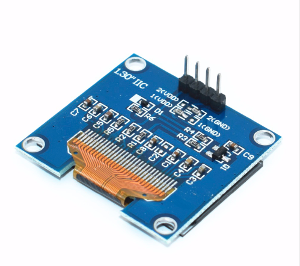

Hey, so can the object for the OLED be easily modified to be used with a physical projector (to project, perhaps hdmi out)?
SPI/I2C OLED display
lokki
#146
no! the OLED object is highly specialised for that kind of displays and only works with the i2c connection. additionally, only text and some simple graphic bars can be displayed.
kentronix
#147
Firstly thank you so much for your work on this SmashedTransistors, great work !
Is there a simple way to know which pull up resistors to add ? Does it vary as you add devices ?
I currently have 2 oleds working perfectly but have 3 other devices waiting to go in. (gyro, capacitive touch and barometric (for blow sening)), do I need to calculate different pulllups ?
SmashedTransistors
#148
You must using the tiar/HW/OLED128x64nice object, my older objects weren't very nice and would not work with other I2C devices attached 
I hope the "nice" one will behave well with your devices attached.
Did you created/coded driver objects for your devices ?
The axoloti GPIOs are set with internal pull up resistors, with the displays i use, it seems to be enough.
Some breakouts have pullup resistors already in place, maybe it is the case with the ones you bought.
I would say, try without resistors and if you have troubles add 4k7 pull up resistors.
kentronix
#149
I am currently using your tiar/HW/OLED128x64dbl object. I haven't connected any of the other devices yet, I will switch to the 'nice' versions when I do.
I believe there are already two objects for the capacitive buttons that I have, deadsy/mpr121/mpr-int and deadsy/mpr121/mpr-bool so I was going to try that next and then most likely write my own for the other devices using those objects to refer to.
At the moment it works fine although it does fail if I use mode 1 (text+graph) on one and try to use mode 0 (4x text) on the other one. It only displays 1 line on the mode 0 screen for some reason, its not something I need though.
Thanks for your help smashed 
SmashedTransistors
#150
I hope it will work.
@deadsy helped me a lot with that "nicer" object that should nicely share the I2C bus with other devices.
(see the threads http://community.axoloti.com/t/gpio-dilemma-mux-or-i2c/5062 and http://community.axoloti.com/t/best-practices-for-i2c-objects-drivers/5075).
philoop
#151
I am using tiar/HW/OLED128x64nice and i`d wish it had a string input for the Scope.
Is that Possible?
SmashedTransistors
#152
The nice version should work like the other versions.
In normal scope mode (mode 1), it uses line1 as a title.
In full scope mode (mode 2), there is no text. With the method I use, it is not possible to superpose text and graphic.
kentronix
#153
Smashy, I cant get the nice version to work at all, even just on a single display. I have been using dbl fine (and the standard one) but nice didnt work, no output at all.
I figured it may be due to lack of pullups but I have fitted a 10k and still cant get nice to work.
Is it a direct replacement for the old non-nice object ? Nothing extra I have to do ? I am removing power in between using one and the other because I notice recovering after attempting to use nice requires a complete reboot of the axo to get the I2C bus working again.
SmashedTransistors
#154
Did you try the help file ? Help -> library -> community -> tiar -> HW -> OLED128x64nice
Note that with the "nice" version you need to include a single gpio/i2c/config object in your patch (it will config the i2c for all the i2c objects once for all).
I hope it will help.
Suburb_Animal
#155
@Saberhagen Did you find the I2C address? and a way to change them?
I bought exactly the same display as yours and I was guessing that the Ohm resistor where the one to change to get another address.
lokki
#156
it is not that easy. you will have to cut a trace on the PCB and solder a wire. see my posts above
Suburb_Animal
#157
In case anyone bought this OLED Display:

The default address is 0x3C and it's not a SSD1306, it's a SH1106 
I tested it using the U8G2 library for Arduino on NodeMCU v2 and the SSD1306 definition works but the two first columns are missing and 2 last one are random.
I guess I'll be more careful next time ...
@lokki I didn't find the post you were referring to ^^
SmashedTransistors
#158
Most 1.3" displays are SH1106, i think it is because of they can provide the power needed to drive the 1.3" OLED display.
the tiar/HW/OLED138x64nice object can work with SSD1306 and SH1106.
(note: don't forget to include a gpio/i2c/config object in all patches using tiar/HW/OLED138x64nice)
Suburb_Animal
#160
Ok I don't think it's worth the trouble since they are dirt ship.
If I want multiple display, I'll buy some other ones and use those on single display projects.
I found some
Thanks a lot for your help guys ! @lokki @SmashedTransistors
BrianA
#161
A question about usage of the OLED128x64 object:
Is there any way to use it without a scope object? I'm really only interested in ùsing the display for text (mode 0) and would like to avoid the overhead of a scope in my patch. Unfortunately, without a scope, I get a compile error when I try to run a patch. Alternately, what's the smallest leanest object I can include to meet the compile requirements of the OLED128x64 object?
SmashedTransistors
#162
No, there is no way ...
That's why i just added a tiar/HW/OLED128x64niceWOScope object 
(note: don't forget to include a gpio/i2c/config object in all patches using tiar/HW/OLED138x64niceWOScope)
Suburb_Animal
#164
Has anyone tried to multiplex I2C Oled displays?
{kind=link}
On Arduino itcan be done using an I2C Multiplexer : TCA9548A
One TCA9548A can multiplex up to 8 screens !
Addressing can be done using two additional digital output.